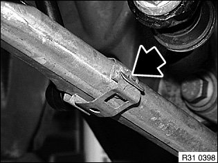
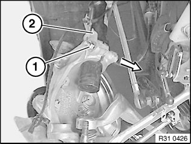
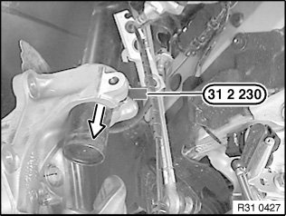
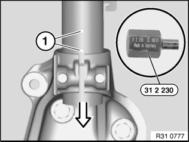
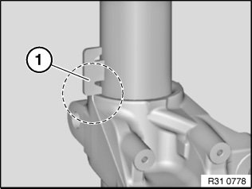

Front Steering Knuckle: Service and Repair
31 21 090 Replacing left / right swivel bearingSpecial tools required:
Necessary preliminary tasks:
^ Remove front brake disc
^ Remove front pulse sensor from swivel bearing
Important!
Check sensor head and line from pulse sensor prior to installation for external damage, replacing if necessary.

If necessary, remove jointed rod of ride height sensor from wishbone.
Slacken wishbone bolt connection on front axle support in order to prevent wishbone rubber mount from being overelongated.
Remove wishbone from swivel bearing.
Remove track rod end from swivel bearing.
Warning!
Risk of injury!
Tension strut is under tension.
Remove trailing link from swivel bearing

Support swivel bearing with workshop jack and a suitable mounting.
Release nut (1), remove holder (2) and remove screw.
Installation:
Screw head must point in direction of travel.
Replace self-locking nut.
Tightening torque 31 31 3AZ.

Expand swivel bearing with special tool 31 2 230.
Lower workshop jack and remove swivel bearing.
Installation:
Keep press fit of swivel gearing and spring strut in lower area clean and free from oil and grease.

Installation:
Expand swivel bearing with special tool 31 2 230, align by way of gap to positioning pins (1) on back of spring strut and raise up to stop.

Installation:
Make sure swivel bearing contacts stop (1) correctly.
Replacement:
^ Modify wheel bearing or replace if necessary
^ Modify brake anchor plate/brake guard plate
After installation:
^ Perform chassis alignment check
^ Carry out steering angle sensor adjustment/adjustment for active front steering